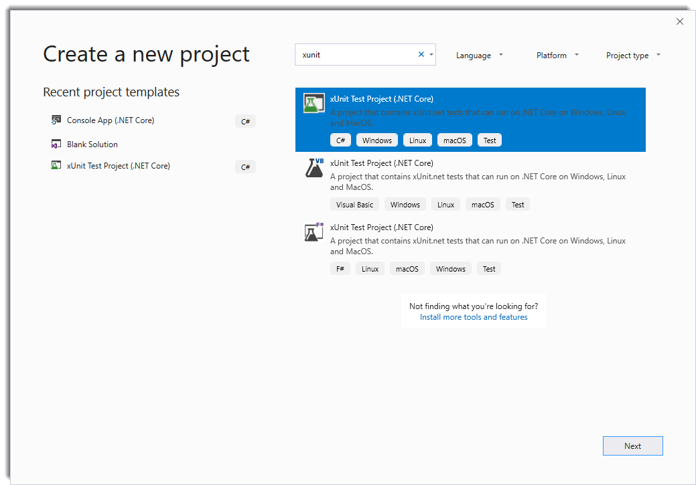
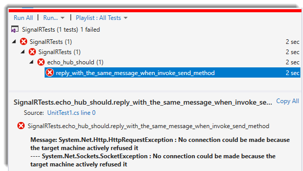
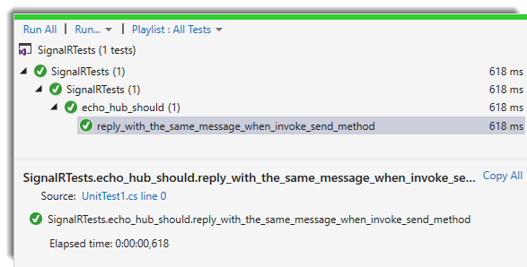

AspNetCore.Diagnostics.HealthChecks is a powerfull liveness and readiness library built on top of ASP.NET Core Diagnostics. Last week I decided to create a new health check for ASP.NET Core SignalR in order to check if your hubs are healthy or not. We usually added unit/integration tests to all projects to ensure the quality of them, and AspNetCore.Diagnostics.HealthChecks has a lot of as you can see in this link. As you know, ASP.NET Core provides an in-memory web test server that we can use in our integration test projects serving test requests without the need of real web host (Internet Information Server, nginx, etc.). My idea was to use this approach to test my SignalR Core health check, so I decided to create a PoC.
Setting up the test project
First, we need to create a new xUnit Test project:

We’ll need to install some NuGet packages in our test project:
Install-Package Microsoft.AspNetCore.SignalR -Version 1.1.0
Install-Package Microsoft.AspNetCore.SignalR.Client -Version 1.1.0
Install-Package Microsoft.AspNetCore.TestHost -Version 2.2.0
Install-Package FluentAssertions -Version 5.6.0
Next, we are going to add a Hub to the project:
public class EchoHub : Hub
{
public async Task Send(string message)
{
await Clients
.Caller
.SendAsync("OnMessageRecieved", message);
}
}
We are going to simulate an echo response, so we need to send to the caller the same message that we recieved.
I decided to move all the Startup code from ConfigureServices and Configure in order to make more clear the example. In a real world, you should leave this code in the Startup class:
public class echo_hub_should
{
[Fact]
public async Task reply_with_the_same_message_when_invoke_send_method()
{
TestServer server = null;
var message = "Integration Testing in Microsoft AspNetCore SignalR";
var echo = string.Empty;
var webHostBuilder = new WebHostBuilder()
.ConfigureServices(services =>
{
services.AddSignalR();
})
.Configure(app =>
{
app.UseSignalR(routes => routes.MapHub<EchoHub>("/echo"));
});
server = new TestServer(webHostBuilder);
var connection = new HubConnectionBuilder()
.WithUrl("http://localhost/echo")
.Build();
connection.On<string>("OnMessageRecieved", msg =>
{
echo = msg;
});
await connection.StartAsync();
await connection.InvokeAsync("Send", message);
echo.Should().Be(message);
}
}
In the test we are asserting that we are receving the same message as we sent.
If we run the test we should recieved an error as shown in the below image:

Apparently we can connect to our hub, but why are receiving this error if we have been configured AspNetCore SignalR in the right way in the WebHosBuilder?
The answer is that TestServer requires HubConnectionBuilder to use the HttpMessageHandler created by it in order to be able to call our Hub(s). To provide the HttpMessageHandler, WithUrl() method provides an oveload that accepts an Action«HttpConnectionOptions» configureHttpConnection as you can see in the code below;
server = new TestServer(webHostBuilder);
var connection = new HubConnectionBuilder()
.WithUrl(
"http://localhost/echo",
o => o.HttpMessageHandlerFactory = _ => server.CreateHandler())
.Build();
If we run our test again, we should see the green:

From now, you can test your Hub as I did with my Health Check
Conclusion
In this post I’ve tried to show you how to make integration tests with AspNetCore SignalR.


Comments